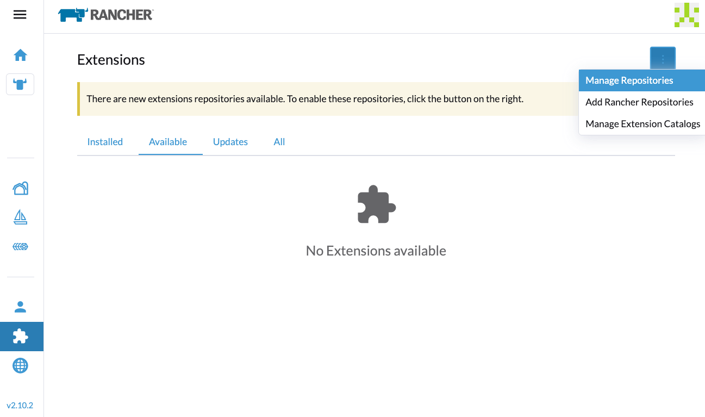
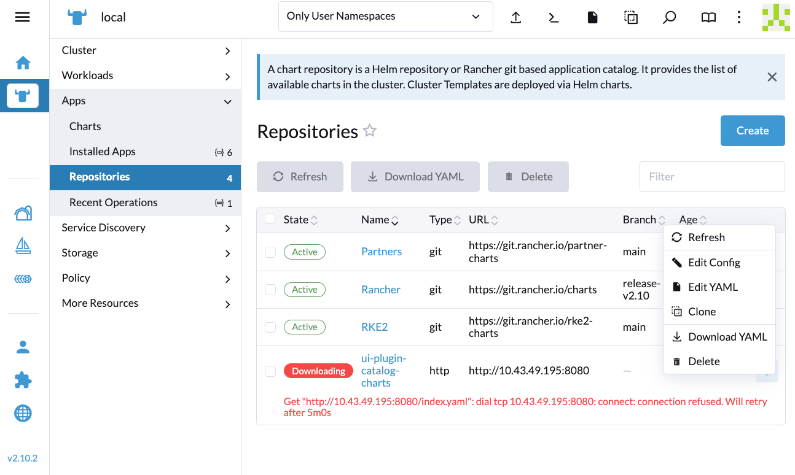
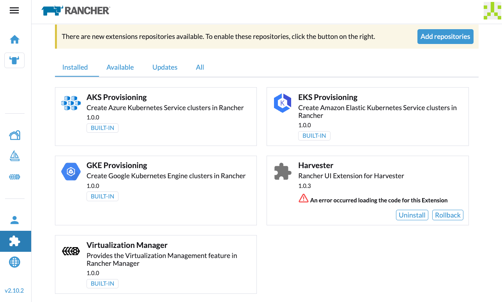

|
Ce document a été traduit à l'aide d'une technologie de traduction automatique. Bien que nous nous efforcions de fournir des traductions exactes, nous ne fournissons aucune garantie quant à l'exhaustivité, l'exactitude ou la fiabilité du contenu traduit. En cas de divergence, la version originale anglaise prévaut et fait foi. |
Environnement isolé physiquement
Cette section décrit comment utiliser SUSE Virtualization dans un environnement isolé physiquement. Certains cas d’utilisation pourraient être lorsque SUSE Virtualization sera installé hors ligne, derrière une passerelle de périmètre de sécurité ou derrière un proxy.
L’image ISO contient tous les paquets nécessaires pour fonctionner dans un environnement isolé physiquement.
Travailler derrière un proxy HTTP
Dans certains environnements, la connexion aux services externes, depuis les serveurs ou les machines virtuelles, nécessite un proxy HTTP(S).
Configurer un proxy HTTP lors de l’installation
Vous pouvez configurer le proxy HTTP(S) lors de l’installation ISO comme indiqué dans l’image ci-dessous :

Configurer un proxy HTTP
Vous pouvez configurer le proxy HTTP(S) en utilisant l’interface utilisateur.
-
Allez à la page des paramètres de l’interface utilisateur.
-
Trouvez le paramètre
http-proxy, cliquez sur ⋮ > Modifier le paramètre -
Entrez la ou les valeur(s) pour
http-proxy,https-proxyetno-proxy.

|
SUSE Virtualization ajoute les adresses nécessaires au Lorsque les nœuds du cluster n’utilisent pas de proxy pour communiquer entre eux, le CIDR doit être ajouté à |
Images de cluster invité
Toutes les images nécessaires pour installer et exécuter SUSE Virtualization sont commodément regroupées dans l’ISO, éliminant ainsi le besoin de précharger des images sur des nœuds de matériel sans système d’exploitation. Un cluster SUSE Virtualization les gère de manière indépendante et efficace en arrière-plan.
Cependant, il est essentiel de comprendre qu’un cluster Kubernetes invité (par exemple, un cluster SUSE® Rancher Prime: RKE2) créé par le Harvester Node Driver est une entité distincte d’un cluster SUSE Virtualization. Un cluster invité fonctionne au sein de machines virtuelles et nécessite de récupérer des images soit depuis Internet, soit depuis un registre privé.
Si l’option Cloud Provider est configurée sur SUSE Virtualization dans un cluster Kubernetes invité, elle déploie le fournisseur de cloud Harvester et le pilote d’interface de stockage de conteneurs (CSI).

En conséquence, nous recommandons de surveiller chaque version RKE2 dans votre environnement isolé et de récupérer les images requises dans votre registre privé. Veuillez vous référer à la Support Matrix pour le meilleur support des capacités du fournisseur de cloud Harvester et du pilote CSI.
Intégrer avec un Rancher externe
Rancher détermine l’image rancher-agent à utiliser chaque fois qu’un cluster SUSE Virtualization est importé. Si l’image n’est pas incluse dans l’ISO SUSE Virtualization, elle doit être récupérée depuis Internet et chargée sur chaque nœud, ou poussée vers le registre du cluster SUSE Virtualization.
# Run the following commands on a computer that can access both the internet and the {harvester-product-name} cluster.
docker pull rancher/rancher-agent:<version>
docker save rancher/rancher-agent:<version> -o rancher-agent-<version>.tar
# Copy the image TAR file to the air-gapped environment.
scp rancher-agent-<version>.tar rancher@<harvester-node-ip>:/tmp
# Use SSH to connect to the {harvester-product-name} node, and then load the image.
ssh rancher@<harvester-node-ip>
sudo -i
docker load -i /tmp/rancher-agent-<version>.tarExtension de l’interface utilisateur Harvester avec intégration Rancher
L’extension de l’interface utilisateur Harvester est requise pour accéder à l’interface utilisateur SUSE Virtualization dans les versions Rancher v2.10.x et ultérieures. Cependant, l’installation de l’extension via le réseau n’est pas possible dans les environnements isolés physiquement, vous devez donc effectuer le contournement suivant :
-
Récupérez l’image rancher/ui-plugin-catalog avec le dernier tag.
-
Dans l’interface utilisateur Rancher, allez à Extensions, puis sélectionnez ⋮ → Gérer les catalogues d’extensions.

-
Spécifiez les informations requises.

-
Référence d’image de catalogue : Spécifiez l’URL du registre privé et le dépôt.
-
Secrets de récupération d’image: Spécifiez le secret utilisé pour accéder au registre lorsque un nom d’utilisateur et un mot de passe sont requis. Vous devez créer ce secret dans l’espace de noms
cattle-ui-plugin-system. Utilisez soitkubernetes.io/dockercfgsoitkubernetes.io/dockerconfigjsoncomme valeur detype.Exemple :
apiVersion: v1 kind: Secret metadata: name: my-registry-secret-rancher namespace: cattle-ui-plugin-system type: kubernetes.io/dockerconfigjson data: .dockerconfigjson: {base64 encoded data}
-
-
Cliquez sur Charger, puis laissez un certain temps pour que l’extension soit chargée.

-
Dans l’onglet Disponible, localisez l’extension nommée Harvester, puis cliquez sur Installer.

-
Sélectionnez la version qui correspond au cluster SUSE Virtualization, puis cliquez sur Installer.
Pour plus d’informations, consultez la Matrice de support de l’extension UI Harvester.


-
Allez à Gestion de la virtualisation → Clusters Harvester.
Vous pouvez maintenant importer des clusters SUSE Virtualization et accéder à l’interface SUSE Virtualization.

Exigences temporelles
Un serveur de protocole de temps réseau (NTP) fiable est essentiel pour maintenir l’heure système correcte sur tous les nœuds d’un cluster Kubernetes, surtout lors de l’exécution de SUSE Virtualization. Kubernetes s’appuie sur etcd, un magasin de clés-valeurs distribué, qui nécessite une synchronisation temporelle précise pour garantir la cohérence des données et éviter des problèmes d’élection de leader, de réplication de journaux et de stabilité du cluster.
Dans un environnement isolé physiquement, où les sources de temps externes sont indisponibles, maintenir une heure précise et synchronisée devient encore plus crucial. Sans une synchronisation appropriée, les nœuds du cluster peuvent rencontrer des échecs d’authentification, des problèmes de planification, voire une corruption des données. Pour atténuer ces risques, les organisations devraient déployer un serveur NTP interne robuste qui synchronise l’heure sur tous les systèmes au sein du réseau.
Assurer une heure précise et cohérente à travers le cluster est essentiel pour la fiabilité, la sécurité et l’intégrité globale du système.
Dépannage
Les extensions de l’interface utilisateur n’apparaissent pas
Si l’écran Extensions est vide, allez dans Dépôts (⋮ → Gérer les dépôts) puis cliquez sur Rafraîchir.




Échec de l’installation
Si vous rencontrez une erreur lors de l’installation, vérifiez la ressource uiplugins.

Exemple :
bash-4.4# k get uiplugins -A
NAMESPACE NAME PLUGIN NAME VERSION STATE
cattle-ui-plugin-system harvester harvester 1.0.3 pending
bash-4.4# k get uiplugins harvester --namespace cattle-ui-plugin-system -o yaml
apiVersion: catalog.cattle.io/v1
kind: UIPlugin
metadata:
# skip
name: harvester
namespace: cattle-ui-plugin-system
spec:
plugin:
endpoint: http://ui-plugin-catalog-svc.cattle-ui-plugin-system:8080/plugin/harvester-1.0.3Assurez-vous que svc.namespace est accessible depuis Rancher. Si ce point de terminaison n’est pas accessible, vous pouvez utiliser directement une IP de cluster telle que 10.43.33.58:8080/plugin/harvester-1.0.3.